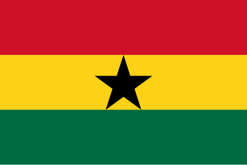
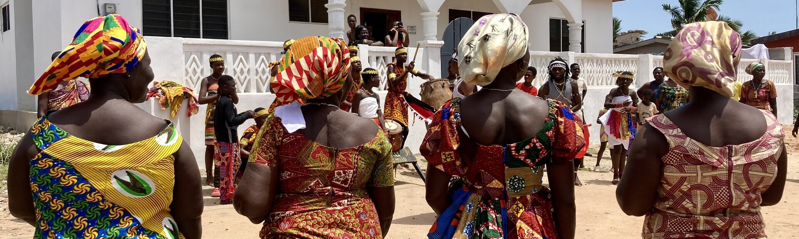
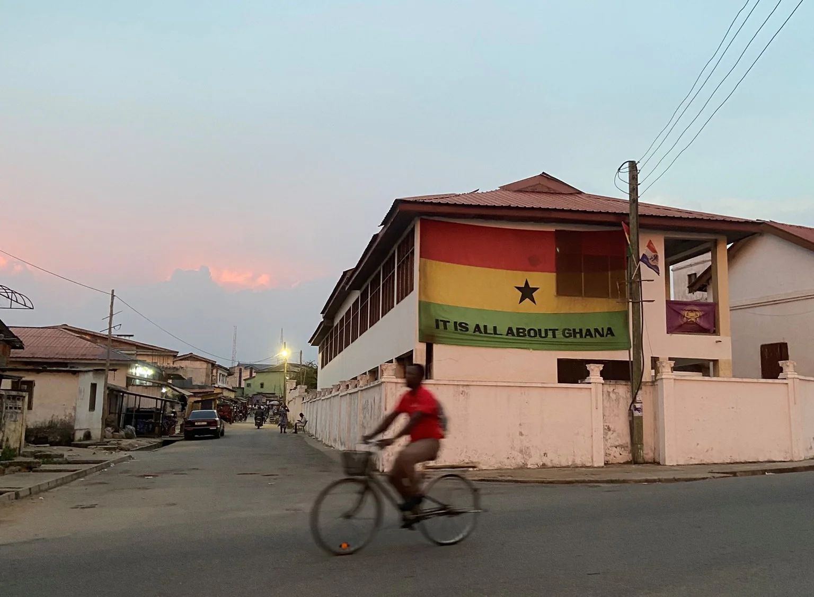

Why You Should Visit Ghana

Ghana, officially the Republic of Ghana, is a country in West Africa. It is
situated with the Gulf of Guinea and the Atlantic Ocean to the south,
and shares borders with Côte d'Ivoire to the west, Burkina Faso to the north,
and Togo to the east.

Facts About Ghana
- Ghana was the first sub-Saharan African country to gain independence from colonial rule.
- The name “Ghana” means “warrior king” in the Soninke language.
- Ghana is located on the west coast of Africa.
Attractions
- Accra (Capital City): Visit Black Star Square, the Kwame Nkrumah Memorial Park, and explore Jamestown's colonial history.
- Cape Coast & Elmina: Essential for understanding the history of the slave trade, visit the Cape Coast Castle and Elmina Castle, which are major UNESCO World Heritage sites.
- Kakum National Park: Located in the Central Region, it features a famous 350-meter-long canopy walkway suspended 40 meters above the rainforest floor.

Click here to learn more